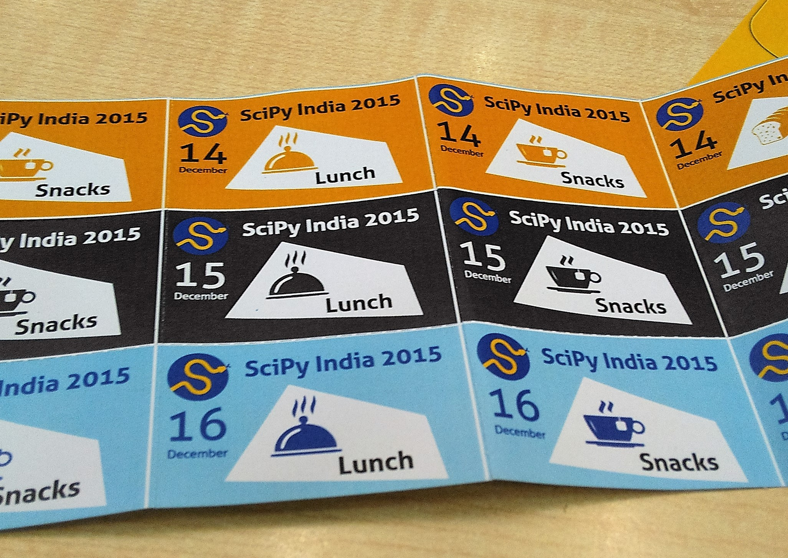

Scipy India 2015
Archive
Just last week, I attended Scipy India 2015, an annual conference on scientific applications of Python. It was great, very informative and I learned a lot of things. Below are some of the notes I made at the conference. Note: These are for my own reference, but I believe will be worth your time if you labor through my gibberish.

Scipy India 2015 - IIT Bombay
Day 1
8:30 - 09:00 AM Registration and Breakfast
Session 1: Setup
9:00 - 10:00 AM
Virtualbox, Andreas’ virtual image/ virtualbox Andreas’ virtual image
Session 2: Introduction to Scientific Computing with Python
Prabhu Ramchandran and Jarrod Millman
10:00 - 11:51 AM
Shortcuts: {% highlight python %} ipython -pylab Ctrl + D Exit Ctrl + a Start of line Ctrl + e End of line Ctrl + r Search {% endhighlight %} - Slicing is NOT copying, view of the same data. - Slides
01:00 - 02:00 PM Lunch
Session 3: SymPy
Sumith
02:00 - 04:00 PM
Symbolic mathematics. Computer Algebra System (CAS)
- Discrete math
- Equations
- Geometry
Example:
{% highlight python %}
x x
ℯ ⋅sin(x) + ℯ ⋅cos(x)
init_printing() # to get LaTeX like formatting
simplify(‘string’) #Converts string into symbols/Simplifies
cos(2).evalf() #Evaluates the values
{% endhighlight %}
- gamma(x) == Γ(x-1)
- Slides and Notebooks
Session 4: Introduction to data anaysis with pandas
Bargava Subramanian
04:25 - 06:00 PM
- dataframe like r
Session 5: BioPython
Sourav Singh
06:00 - 07:00 PM
Day 2
Session 1: NetworkX
Mridul Seth and Himanshu Mishra
09:00 - 11:00 AM
- Graph Theory in Python
- add nodes/edges
- Tutorial
Session 2: Domain Specific Languages and High Performance computing in Python
Andreas Klöckner
11:00 - 01:00 PM
- NO : My code is xxxx faster
YES : My code achieves 37% of max floating point performance.
Code is a Spaghetti mess
Divide
- Math work
Performance work
Mathematically-oriented mini-languages (DSLs)
Domain-specific optimizations and transformations.
Tutorial
- Building Languages
- OpenCL
- Case study - numpy - einsum
- Loopy
Requirements
Demo
Session 3: Pandas applications
by Prof. Madhu Belur, Saurabh Kumar & Shana Moothedath
02:00 - 03:00 PM
- TA
- GATE
Session 4: Pyomo - COIN-OR optimization
by Prof. Ashutosh Mahajan, Prof. Jayendran Venkateswaran & Mr. Atul Kumar
03:00 - 04:00 PM
- Python Optimization Modeling Objects
- Non-linear optimization
- Website
Day 3
Andreas Klöckner’s Keynote
09:15 - 10:15 AM
- Sandy Bridge vs Broadwell performance
- Vector processor not GPU (FP math)
OpenCL
- Device Neutral
- JIT built in
OpenCL/CUDA/ISPC Same idea
Some abstractions disappear/not all
Computation is cheap, memory ins’t
Communication is slow or power hungry or both.
PyOpenCL
Context - bag around all the stuff
- Intel GPU
- Processor
- AMD
lower level device buffer
{% highlight python %} 2*a_dev #A device copy directly operated on prg = cl.Program(ctx, “”” kernel void twice (global float *a) { int gid = get_global_id(0); a[gid] = 2*a[gid]; } “”“).build() prg.twice(queue,a.shape,None,a_dev.data) result = a_dev.get() {% endhighlight %} - Key Algorithm : Scan - np.cumsum - sum of all previous + current - Addition is commutative and associative - More work to get there faster!
- loo.py
- How computation works + How mapped to hardware
- Math level stays same
- counting flops
Python for statistics
Jarrod Millman
10:15 - 11:05 AM
- Statistical Computing
Permutation testing
Monte Carlo
Why Python?
- General Purpose
- Popular scientific applications
- statistical applications
Permutation Testing
randomization - nonparametric approach to statistical significance (evidence to reject) testing (Not many assumptions)
independent and identically-distributed random variables.
Informal hypothesis
Null hypothesis : No effect
Alternate : Mass increases
pip install permute
Python based science lab
Ajith Kumar
11:15 - 11:45 AM
- expeyes
- microcontroller for data acqusition, python for program
- http://seelablet.jithinbp.in
Symengine and Sympy
Sumith
11:45 - 12:10
- SymEngine : Core C++
- Use wrappers to SymPy
- Hot-swappable to SymPy
Cython - blend of Python and C ::
cdef int i,a,b;
Sandhi : Visual Programming Software
12:10 - 12:35
- Replacement for Labview - Laboratory Virtual Instrument Engineering Workbench
Open Source optimization - COIN OR
Prof Ted Ralphs
02:40 - 03:10
- Algebraic Modelling Languages